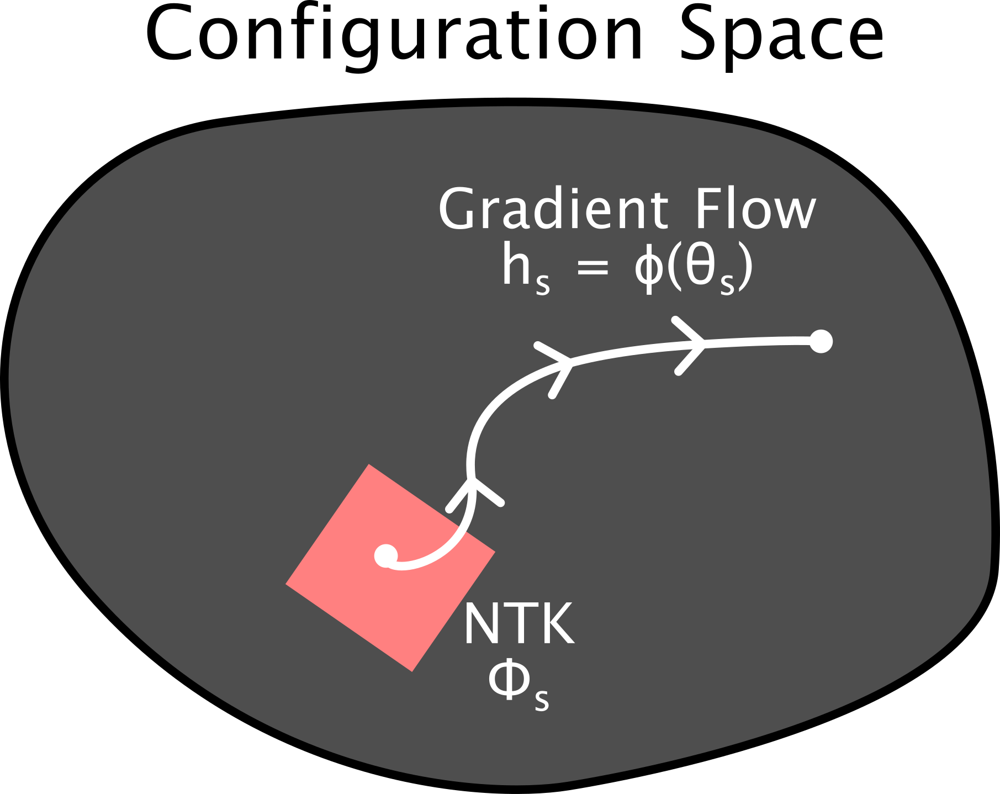
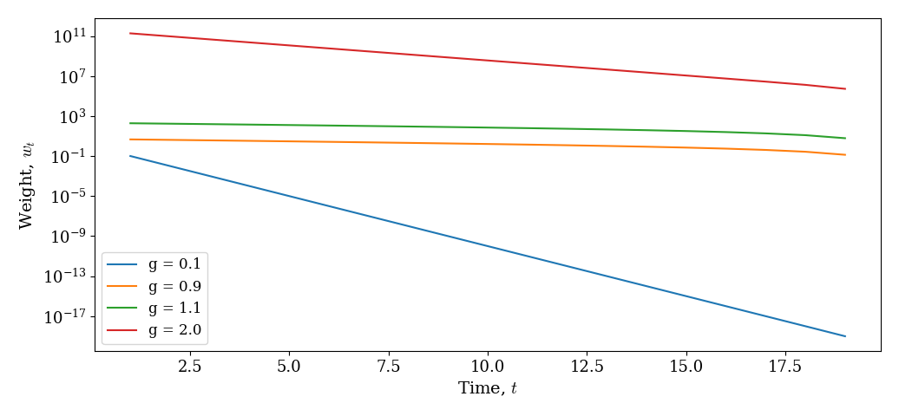
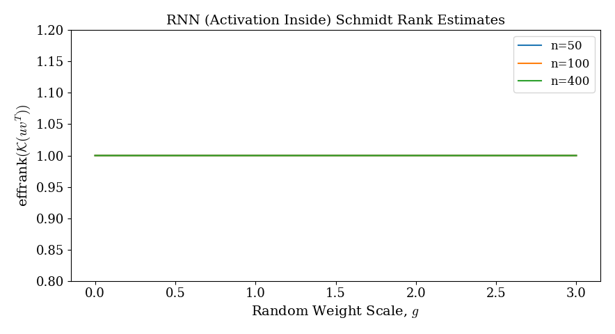
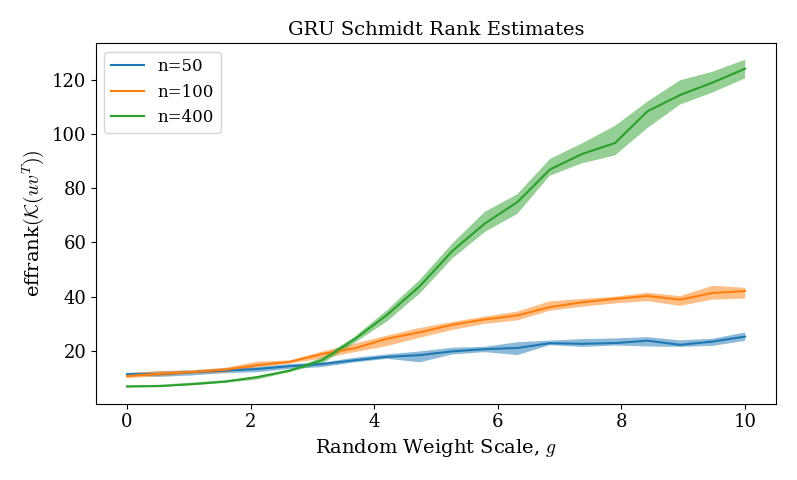
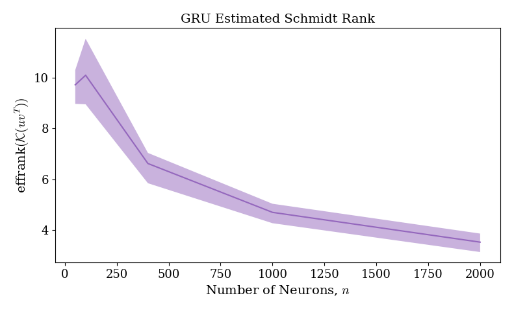
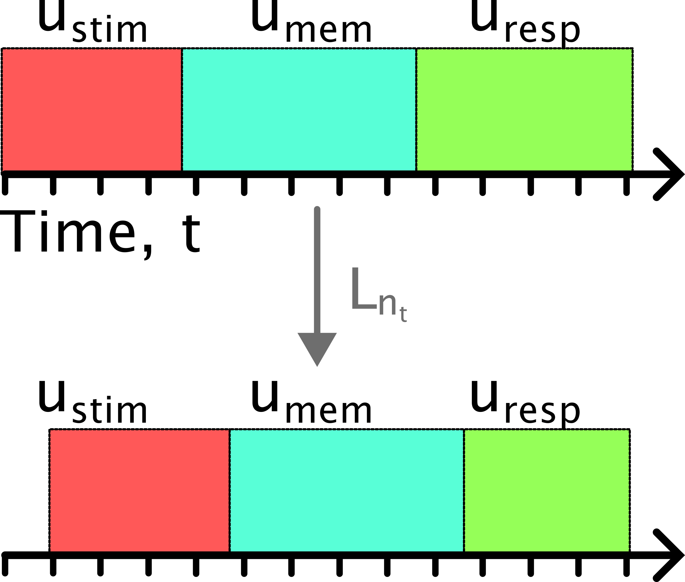
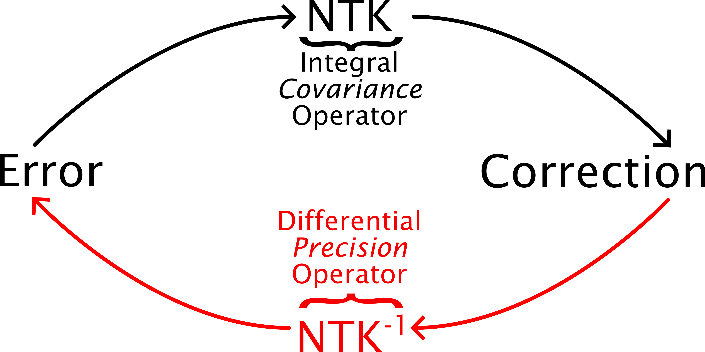

Space-Time Bias of the NTK for Recurrent Models
| Relevant Links | |
| Previous Blog | Pip Pytorch Package |
TLDR
Q: The NTK describes GD learning. How does it distort error signals?
A: We can characterize its properties with common linear algebra tools.
\( \def\tr{{\text{tr}}} \def\G{{\mathcal{G}}} \def\K{{\mathcal{K}}} \def\P{{\mathcal{P}}} \def\Q{{\mathcal{Q}}} \def\d{{\text{d}}} \def\R{{\mathbb{R}}} \def\E{{\mathbb{E}}} \def\Err{{\text{Err}}} \def\Res{{\text{Res}}} \def\diag{{\text{diag}}} \def\back{{\leftarrow}} \def\j{{\mathfrak{j}}} \def\V{{\mathcal{V}}} \def\pt{{\mathcal{D}_t}} \def\Cov{{\text{Cov}}} \def\effrank{{\text{effrank}}} \def\bias{{\text{bias}}} \)
Synopsis
In this blog I work out the NTK for the entire hidden state of a recurrent model. Specializing to a heirarchy of more and more complex case (autonomous, scalar valued weights -> non-autonomous scalar weights -> linear RNN -> non-linear RNN).
Amazingly, we can explicitly prove many general properties of the NTK, even for finite-width non-linear models with zero assumptions!
Get ready for lots of math using tensors, vanilla and higher-order SVDs, partial traces, effective ranks, separability, and differential/integral operators.
Introduction: Learning Rules as Linear Operators
{kind=link}

Fig 1 Schematic of the perspective presented. The model state at any GD iteration (\(s\)) is a parameterized object \(h_s = \phi(\theta_s) \in S\) given parameters \(\theta_s \in P\). The full state is a single point in the so-called configuration space and its evolution over GD it a trajectory (shown) in this space. The configuration space NTK describes the local geometry of this space. Each GD iteration, an error signal is plugged into the NTK, producing a small correction to the hidden state.
We can characterize GD learning in generic models as follows. Consider a dynamical mapping \(\phi : P \rightarrow S\), so that $$h := \phi(\theta) \in S, \text{ for } \theta \in P$$ denotes the state of the model (e.g., all activations at every layer, state over all times and inputs, etc). Here, \(P\) denotes the parameter space. Furthermore, we let \(S\) denotes the so-called configuration space, i.e. the space of every variable involved in the model computation (or the ones we want to track).
Each perturbation in the parameter space, \(\theta \mapsto \theta - \eta \delta \theta\), gives rise to a perturbation to the state space. In particular, define the configuration-space Jacobian, $$\mathcal{J} := \frac{d h}{d \theta}$$ Then, if we define some loss, \(L : S \rightarrow P\), and perform GD, \(\delta \theta := \frac{d L}{d \theta}\), the configuration-space state changes by $$\delta h = -\mathcal{J} \mathcal{J}^T \cdot \frac{\partial L}{\partial h},$$ assuming changes are small enough that linearization applies. We let $$\Phi := \mathcal{J} \mathcal{J}^T$$ denote the Configuration-Space Neural Tangent Kernel (CS-NTK). Thus, \(\Phi\) describesthe local geometry of GD learning on the submanifold \(h(P) \subset S\) of the full configuration space. A single evaluation of the model on all specified inputs corresponds to a point in the configuration space, and when the model is trained with GD, this produces a trajectory (gradient flow) in the configuration space according to the prescribed error signal (tangent vectors in this space) and CS-NTK (local coordinates).
A Simple Motivating Example
First, we describe a simple motivating example. Consider the dynamical system without any input, $$h(t+1) = g h(t), \quad h(0) := h_0$$ where \(g\) is a scalar and \(h\) is a vector in \(\mathbb{R}^n\). Suppose we simulate this dynamical system for \(n_t\) timesteps. Then, we can see $$h(t) = h_0 g^{t}$$ We can choose the configuration space \(S\) as the realization of \(h\) over all times \(t > 0\), so $$S = \mathbb{R}^{n_t \times n}$$ Suppose \(g\) is a trainable parameter that is iteratively tuned to minimize some loss function. Then, we have an associated configuration space Jacobian, \(\mathcal{J} = d h / d g\) and the configuration space NTK \(\Phi = \mathcal{ J J}^T\). As in my previous blog, we can then decompose \(\Phi\) according to $$\Phi = \mathcal{P K P}^T,$$ where $$\mathcal{P} = \begin{pmatrix} g & g^2 & g^3 & \dots \\ 0 & g & g^2 & \dots \\ 0 & 0 & g & \dots \\ \vdots & \vdots & \vdots & \ddots \end{pmatrix} \otimes I_n$$ and $$\mathcal{K} = v v^T \otimes I_n \quad \text{ where } v = \| h_0 \| \cdot [1, g, g^2,\dots, g^{n_t}]^T$$ Note that \(\mathcal{P}\) is full rank over both the spatial and temporal dimensions. On the other hand, \(\mathcal{K}\) is full rank over the spatial dimension but a rank one outer product over the temporal dimension. In total, we can compute $$\Phi = \mathcal{P K P}^T = (w w^T \otimes I_n) \quad \text{ where } w_t = \| h_0\| g^t \frac{1 - g^{2 (n_t - t )}}{1 -g^2}$$ Hence, the CS-NTK operator is rank 1 over the temporal dimension (bottle-necked by the \(\mathcal{K}\) operator) and full rank over the spatial dimension. As we will see, this means that \(\Phi\) can express outputs over any spatial dimension in \(\mathbb{R}^n\), but on any given input spatial-temporal trajectory, its output only explores a one-dimensional subspace of \(\mathbb{R}^n\). In other words, gradient corrections can be arbitrarily controlled to steer in any direction, but the observed corrections are extremely limited.
{kind=link}

Fig 1 Visualization of the scalar weight values \(w_t\) over time \(t\) for the NTK in this simple example. Note that in all cases they preferentially bias towards initial times, \(t\) and decay to zero. Here, \(n_t = 20\) is the total number of timesteps. At \(t = n_t\), \(w_t = 0\).
How does the operator \(\Phi\) then act on a particular trajectory input? Suppose \(q \in S\) is an arbitrary element of the configuration space, so we can think of it is a matrix with rows corresponding to times and columns corresponding to hidden units (spatial dimension). Then, \(\Phi\)'s action can be thought of as a two-step process. First, perform a weight sum over the entries of \(q\) over time, defining a new vector, \(p\): $$p := \sum_{t=1}^{n_t} w_t \cdot q(t) \in \mathbb{R}^n$$ Then, the output of \(\Phi\) simply distributes this single vector accross time according with different weights over time: $$\Phi q = \begin{pmatrix} w_1 p^T \\ w_2 p^T \\ w_3 p^T \\ \vdots \end{pmatrix} \in S$$ Thus, we see that \(\Phi\) performs a weighted sum over time on an input, then distributes that new single vector over times. In total its output on any trajectory is at most one-dimensional in the spatial dimension, \(\mathbb{R}^n\). Even if \(q\), the input perturbation to the NTK, explores the entirety of this physical space, \(\Phi\) still compresses it to a single physical dimension!
Example 2: Non-Autonomous Case
Consider a slightly more complex example with actual task inputs. Specifically, let \(x_j(t) \in \mathbb{R}^n\) denote an input to our dynamical system, and suppose \(1 \leq j \leq n_x\), the input count. Then, consider the dynamics $$h_j(t+1) = g h_j(t) + k x_j(t), \quad h_j(0) := h_0,$$ where \(g, k\) are scalars that are both trained with GD with some loss function and we simulate the model for \(n_t\) timesteps.
First, we must define the configuration space. Specifically, let's say we want to track the evolution of the hidden state. In PyTorch, the hidden state would be a three tensor of shape \([n_x, n_t, n]\) over the inputs, \(x_j\), times, \(t\), and physical hidden units. This motivates our choice of configuration space $$S = \mathbb{R}^{n_x \times n_t \times n}$$ We want to identify the structure of the configuration-space NTK operator \(\Phi : S \rightarrow S\). As in my prior blog, this decomposes as \(\Phi = \mathcal{P K P}^T\). The entries of \(\mathcal{P}\) as a matrix are defined by the state-to-state Jacobian's at distinct times: $$\mathcal{P}[i, t, :, j, s, :] = \delta_{i, j} \cdot \frac{d h_j(t)}{d h_j(s)} \in \mathbb{R}^{n \times n},$$ $$\text{ for } 1 \leq i, j \leq n_x, 1 \leq t, s \leq n_t$$ Specifically, this Jacobian (in the literature known as the "state transition matrix") is a product of single-step Jacobians: $$\frac{d h_j(t)}{d h_j(s)} = \prod_{t_0 = s}^{t-1} \frac{d h_j(t_0+1)}{d h_j(t_0)} = \prod_{t_0 = s}^{t-1} g \cdot I_n = g^{t-s} \cdot I_n$$ The interesting thing here is that, even though the dynamics are now non-autonomous with an input term \(x\), \(\mathcal{P}\)'s entries are identical for all input choices, \(1 \leq j \leq n_x\) in the expression above. In particular, we can write $$\mathcal{P} = \begin{pmatrix} g & g^2 & g^3 & \dots \\ 0 & g & g^2 & \dots \\ 0 & 0 & g & \dots \\ \vdots & \vdots & \vdots & \ddots \end{pmatrix} \otimes I_n \otimes I_{n_x}$$ The operator \(\mathcal{K}\) isolates the fact that we have an additional input term. In particular, define a 3-tensor \(v \in \mathbb{R}^{n_x \times n_t \times 2 n}\), the so-called augmented activity consisting of the hidden and input activities concatenated over time. Specifically, assume \(v\) has entries $$v_{j, t, :} = [ h_j(t), x_j(t) ] \in \mathbb{R}^{2n}$$ Let \(V \in\mathbb{R}^{(n_x \cdot n_t) \times 2n}\) denote the matrix version of this tensor, flattening the time and input axes together. Then, up to some re-ordering of indicies, $$\mathcal{K} = V V^T \otimes I_n$$ We see \(\mathcal{K}\) is arbitrarily expressive (controllable) in the spatial dimension.
The time-input complexity of \(\mathcal{K}\) is what bottle-necks in this scenario. In particular, let's work out the effective rank of the non-spatial part of \(\mathcal{K}\). We see immediately that $$\text{effrank}_{n_x \cdot n_t}(\mathcal{K})= \text{effrank}(V V^T)$$ Now, \(V V^T\) is a massive \(n_x \cdot n_t\) by \(n_x \cdot n_t\) matrix. However, conveniently, its effective rank is the same as the effective rank of the other Grammian product, \(V^T V\), which contracts over these dimensions and is \(2n\) by \(2n\). So, $$\text{effrank}_{n_x \cdot n_t}(\mathcal{K})= \text{effrank}(V^T V) \leq 2 n$$ We see immediately that \(\mathcal{K}\) bottle-necks more than \(\mathcal{P}\), which has full rank. The effective rank on the left above can be at most \(n_t \cdot n_x\), but we see in reality it is \(\leq 2 n\), which is usually smaller.
Note \(V^T V\) is the second moment of the augmented (hidden, input) activity, so its effective rank reflects the dimension of this activity (possibly skewed since there is no zero-centering, as in a covariance). In typical scenarios (but not in total generality), that mean contribution decreases the effective rank, so we typically can conclude $$\text{effrank}_{n_x \cdot n_t}(\mathcal{K}) \leq \text{effdim}\left([ h_j(t), x_j(t)]_{j,t}\right)$$ I.e., \(\mathcal{K}\) is bottle-necked on any given input error signal to produce an output that is bounded by the effective dimension of the (hidden, input) augmented activity.
Finally, let's work out the full cs-NTK. We see $$\Phi = (W W^T) \otimes I_n$$ where $$W = (\begin{pmatrix} g & g^2 & g^3 & \dots \\ 0 & g & g^2 & \dots \\ 0 & 0 & g & \dots \\ \vdots & \vdots & \vdots & \ddots \end{pmatrix} \otimes I_{n_x}) \cdot V$$ Explicitly, for each input block, \(V_{j}\), the product looks like $$W_j = \begin{pmatrix} g & g^2 & g^3 & \dots \\ 0 & g & g^2 & \dots \\ 0 & 0 & g & \dots \\ \vdots & \vdots & \vdots & \ddots \end{pmatrix} \cdot \begin{pmatrix} h_j(1)^T & x_j(1)^T \\ h_j(2)^T & x_j(2)^T \\ \vdots & \vdots \\ h_j(n_t)^T & x_j(n_t)^T \end{pmatrix}$$
One-Dimensional Dynamics Case
For illustration, imagine that our augmented activity exists in a low dimensional subspace. For simplicity, assume it is a dimension one subspace. Specifically, then we can write $$[h_j(t)^T, x_j(t)^T] = [\hat h_j(t), \hat x_j(t)] \cdot u^T,$$ where \(\hat h_j(t), \hat x_j(t)\) are scalars and \(u \in \mathbb{R}^{2n}\) is a fixed (assumed unit) vector specifying the one-dimensional hidden and input spaces. We can then write \(V\) as a rank 1 outer product matrix $$V = v \cdot u^T,$$ where \(v \in \mathbb{R}^{(n_x \cdot n_t)}\) is a vector in the flattened input-time space. Note then that $$V V^T = v v^T$$ We see that \(\mathcal{K}\) acts similarly in a two-step way like in the first example above. Specifically, application of \(v^T\) to a tensor \(q \in \mathbb{R}^{n_x \times n_t \times n}\) performs a weight sum of the vector values of \(q\) over all time and batches, producing a single value \(p \in \mathbb{R}^n\). Then, application of \(v\) to \(p\) distributes this value over the time-input space according to the weights in \(v\). Specifically, note that the outputs are all in the direction of \(p\), i.e. the output is one-dimensional in the physical space \(\mathbb{R}^n\)! In total, we see the \(\mathcal{K}\) operator is unbiased: it can be steered to produce outputs in any direction \(\mathbb{R}^n\) by choosing an appropriate error input, but the corrections it does produce when the activity is one-dimensional are also only one-dimensional. Another interesting observation is that the direction, \(u\), of the manifold on which the activity existed did not factor into \(\mathcal{K}\) at all. Indeed, we could rotate the activity to exist in any subspace and we would get the same final result, as long as the values in \(v\) (relative scales over time and inputs in the subspace) are preserved.
General Case
In the general case, the augmented dynamics do not exist in a one-dimensional subspace. But, similar tricks apply. Specifically, write in SVD form $$V = \sum_{i=1}^r \sigma_i v_i \cdot u_i^T$$ where the \(v_i, u_i\) terms constitute orthonormal bases in their respective spaces. Then, $$V V^T = \sum_{i=1}^r \sigma_i^2 v_i \cdot v_i^T$$ For a tensor input \(q\) to the operator \(\mathcal{K}\). We view \(q\) as an element of the bi-partitioned space \(\mathbb{R}^{(n_x \cdot n_t) \times n}\). Let \(p_i\) denote the weighted-sum fixed vector output \(v_i^T q \in \mathbb{R}^n\). We have $$\mathcal{K} q = \sum_{i=1}^r \sigma_i^2 v_i p_i^T,$$ Each \(v_i p_i^T \in \mathbb{R}^{(n_x \cdot n_t) \times n}\) is a 3-tensor consisting of weighted copies of the singular vector \(p_i\), i.e. it is at most one-dimensional spatially. So, this expression explores at most \(r\) spatial dimensions. If the activity is very low rank, so \(\sigma_i^2\) decays rapidly, we can truncate to a few terms, getting an even lower-dimensional output of \(\mathcal{K}\). We see in total that the effective rank of \(V\) dampens the dimensionality of the output of \(\mathcal{K}\) on any particular input, confirming the math above.
My summarized intution is as follows. (1) The expected outputs of \(\mathcal{K}\) share spatial characteristics with the actual (hidden, input) augmented activity, including a dimensionality bound and similar spectral energy (singular value distribution). However, (2) it is not biased in any way towards the actual activity directions (the terms \(u_i\) above), which completely evaporate.
We can make (1) more formal. Specifically, suppose we gave \(\mathcal{K}\) an input \(X \in \mathbb{R}^{(n_x \cdot n_t) \times n)}\) that is isotropic spatially with mean zero entries. Formally, we say \(\mathbb{E}[X] = 0\), \(\mathbb{E}[X^T X] = I_n\). We can define the spatial mean as \(\mathbb{1}^T X \in \mathbb{R}^n\), and we can see clearly this also has mean zero. Let \(Y = \mathcal{K} X\) denote the random variable output of the operator applied to \(X\). Let's quantify the spatial bias and distribution of \(Y\). Firstly, we can see $$\mathbb{E}_X [Y] = \mathbb{E}_X [\sum_{i=1}^r \sigma_i^2 v_i v_i^T X] = \sum_{i=1}^r \sigma_i^2 v_i v_i^T \mathbb{E}_X [X] = 0$$ so the mean of every entry of \(Y\) is zero and, in particular, the mean in \(\mathbb{R}^n\) over the time-input space is also zero. Next, the distribution. $$\mathbb{E}_X[Y^T Y] = \mathbb{E}_X [\mathcal{K} X X^T \mathcal{K}] = \mathcal{K} \mathbb{E}_X [X X^T] \mathcal{K} = \mathcal{K} \mathcal{K}^T$$ Hence, the \(Y\) shares left singular vectors \(\mathcal{K}\), which are inherited exactly from the augmented activity, \(V\): $$\mathbb{E}_X[\text{svecs}_{left}(Y)] = \text{svecs}_{left}(V)$$ It also shares the same singular values, up to squaring. But it does not share right singular vectors. We can think of this as follows. The augmented activity can be written as a sum of individual spatial dimensions in particular time-input modes. Likewise, the expected output of \(\mathcal{K}\) shares these time-input modes, but not the exact spatial dimensions. So, \(Y\) will have the same time-input character as the augmented activity, but the away it is spatially aranged could differ. This confirms the intuition in (1) and (2) above: updates are unbiased in the spatial dimension, but inherit effective rank and time-input manifold structure!
Non-linear RNN Example
Now consider an input-drive RNN. Specifically, suppose we sample a batch \(x_1, \dots, x_{n_x}\) of input trajectories and let \(h_j(t)\) denote the model hidden state at discrete time \(t \leq n_t\) on input \(x_j\). We assume the dynamics have the form $$h_j(t+1) = W \phi(h_j(t)) + W_{in} x_j(t)$$ and we train the RNN on a task with fixed output weights that are not trained (for simplicity). We assume \(h_j(t) \in \mathbb{R}^n\) so there are \(n\) physical hidden units in the network. Finally, we assume \(x_j(t) \in \mathbb{R}^{n_{in}}\). Let's examine the structure of the configuration space NTK on this more complex example.
As in example 2, we choose $$S = \mathbb{R}^{n_x \times n_t \times n}$$ We define the operator \(\Phi : S \rightarrow S\), the configuration space NTK. Again, as in my prior blog, we can decompose \(\Phi = \mathcal{P K P^T}\). Define a matrix \(V \in \mathbb{R}^{n_x \cdot n_t, n + n_{in}}\), the concatenated hidden, input activity: $$V = \begin{pmatrix} \text{mat}(\phi(h)) \\ \text{mat}(x) \end{pmatrix} \in \mathbb{R}^{n_x \times n_t, n + n_{in}}$$ Then, we can show \(\mathcal{K}\) is identical (up to some rearanging of coordinates) to the operator $$\mathcal{K} = (V V^T) \otimes I_n \in \mathbb{R}^{n_x \cdot n_t \cdot n, n_x \cdot n_t \cdot n}$$ Immediately, we see \(\mathcal{K}\) is full-rank over the spatial hidden unit dimension: $$\text{effrank}_n(\mathcal{K}) = n$$
Let's determine the effective rank of \(\mathcal{K}\) over the non-spatial batch \(\times\) time dimension. But, note \(\mathcal{K}\) is a separable operator when partitioned into physcial and non-physcial parts. In particular, the partial trace over hidden units, \(\text{tr}_n(\mathcal{K})\) is simply $$\text{tr}_n(\mathcal{K}) = \text{tr}(I_n) \cdot (V V^T) = n \cdot (V V^T) \in \mathbb{R}^{n_x \cdot n_t, n_x \cdot n_t}$$ Thus, we see the batch \(\times\) time part of \(\mathcal{K}\) has SVD coinciding with the SVD of the (hidden, input) concatenated activity \(V\)! In particular, $$\text{effrank}_{n_t \times n_x}(\mathcal{K}) = \text{effrank}(V V^T) = \text{effrank}(V^T V)$$ Interestingly, the term \(V^T V\) is an \(n \times n\) second-moment matrix quantifying variability of the (hidden, input) activity over all batches and times, without subtracting the mean. So, if this non-centered activity exists in a low-dimensional subspace of dimension \(r\) we see \(\mathcal{K}\) can only produce outputs that explore \(r\) spatial dimensions!
In total, we observe that \(\mathcal{K}\)'s expressiveness over physical space, \(\mathbb{R}^n\), is bottle-necked by the (hidden, input) effective dimension over all batches and time. Since it acts like an identity over the \(n\)-space, if we give it infinitely many isotropic random inputs, it will not show any bias towards a particular hidden dimension. However, each particular correction it generates is limited in physical effective dimension by the current (hidden, input) effective dimension at each GD iteration.
General Case: Schmidt Rank/NTK Separability
Separable Operators are Nice: So far, most of the operators we've seen are separable over space versus observationis (time-trial) domain. Specifically, we can show $$\mathcal{P} \cong\mathcal{P}_{n_x \cdot n_t} \otimes \mathcal{P}_{n}, \mathcal{K} \cong\mathcal{K}_{n_x \cdot n_t} \otimes \mathcal{K}_{n}$$ where \(\cong\) means "same up to isomorphism" where the isomorphism here just shuffles the full tensor domain coordinates in observations versus space (technically I should use this notation almost everywhere, but I'm lazy and we get the point). In the scalar-valued linear RNN, this was the case, in both the autonomous and non-autonomous examples above.
When the operator is separable, we can easily capture notions of space-time bottle-necking. Specifically, if \(\mathcal{K} \cong\mathcal{K}_{n_x \cdot n_t} \otimes \mathcal{K}_{n},\) the partial trace $$\text{tr}_n(\mathcal{K}) = \text{tr}(\mathcal{K}_{n}) \cdot \mathcal{K}_{n_x \cdot n_t} \in \mathbb{R}^{n_x \cdot n_t \times n_x \cdot n_t},$$ and $$\text{tr}_{n_x \cdot n_t}(\mathcal{K}) = \text{tr}(\mathcal{K}_{n_x \cdot N_t}) \cdot \mathcal{K}_{n} \in \mathbb{R}^{n \times n}$$ so we see that the spatial effective rank is just the effective rank of \(\mathcal{K}_n\), and likewise for time-trials axis.
Quantifying Separability: In the non-linear RNN case, only \(\mathcal{K}\) was separable: \(\mathcal{P}\) is not separable over the spatial domain since. Intuitively, this is because \(W \sigma'(h(t))\), the one-step Jacobian, can vary over time, trials and hidden units, so we can't separate it into a single simple action on all hidden units.
The separability of the RNN \(\mathcal{K}\) was due to the structure of the parameterization with weights outside the non-linearity. This is not in general going to hold. Indeed a GRU will not have a separable form of \(\mathcal{K}\). However, in practice I find (*) it is very close to the form \(\mathcal{K}_{gru} \otimes I_n\), similar to the RNN, which is separable.
How can formalize this notion? This can be done using the so-called Schmidt decomposition which is a notion of SVD for tensors. Note before, when the operators were separable, we can apply SVD to spacial and time-trials part individually. The Schmidt decomposition is distinct from this. It asks how many tensor product separable terms we need to capture the operator.
Specifically, for any operator on the observations versus space time domain above, \(\mathcal{G}\), we can write $$\mathcal{G} \cong \sum_{r=1}^R \sigma_r A_r \otimes B_r$$ where each \(A_r \in \mathbb{R}^{n_t \cdot n_x \times n_t \cdot n_x}\), the space-time observational parts, and each \(B_r \in \mathbb{R}^{n \times n}\), the spatial part, and finally under the Frobenius matrix inner product the matrices are a bi-orthogonal system: $$\text{tr}(A_{r}^T A_{\ell}) = \text{tr}(B_{r}^T B_{\ell}) = \delta_{r,\ell} \in \{0, 1\}$$ Here, \(R\) is the so-called Schmidt rank or tensor rank of the operator \(\mathcal{G}\) and the \((\sigma_r)_{r=1}^R\) are the Schmidt singular values. The latter capture how distributed the operator is over its separable components. We can define the Schmidt effective rank just like PR dimension as $$\text{effrank}_{\text{Schmidt}}(\mathcal{G}) = \frac{\left( \sum_{r=1}^R \sigma_r^2 \right)^2}{\sum_{r=1}^R \sigma_r^4} \in [0, R]$$ In the separable case, we see the exact Schmidt rank is \(1\). Now, we can formalize (*) as: the effective Schmidt rank of \(\mathcal{K}\) for the GRU is close to \(1\). Even deeper, I'd hypothesize that in the limit for the GRU $$\text{Hypothesis (GRU): } \text{effrank}_{\text{Schmidt}}(\mathcal{K}) \rightarrow 1 \text{ as } n \rightarrow \infty$$
Matrix-Free Schmidt Rank is Too Hard: Unfortunately, estimating the Schmidt rank in a matrix-free way seems very hard and for now I've used some simpler approaches to approximately understand it, as detailed below. The reason for this difficulty is as follows. The Schmidt decomposition is concerned with how an operator \(\mathcal{G}\) acts in a space versus observations bi-paritioned space. Specifically, \(\mathcal{G} : \mathbb{R}^{n_x \times n_t \times n} \rightarrow \mathbb{R}^{n_x \times n_t \times n}\) in the recurrent case we've been discussing. However, the Schmidt effective rank denominator term above is obtained by considering a map \(R(\mathcal{G}) : \mathbb{R}^{n^2} \rightarrow \mathbb{R}^{(n_x \cdot n_t)^2}\), given by re-ordering the indices of \(\mathcal{G}\) as a matrix. This is totally easy if we have the matrix, but in the matrix-free world, it's total hell.
Stupid Simple Lower Bound: An alternative simple approach to get an idea of how separable an operator \(\G\) is as follows. Specifically, if we feed \(\G\) with a rank-1 outer product \(u \cdot v^T\) with \(u \in \mathbb{R}^{n_x \cdot n_t}, v \in \mathbb{R}^n\), the output is rank-1 provided \(\G\) is separable. If the operator is separable, only one singular value should be required to capture all the variance in the output. If \(R\) singular values are needed to capture the output variance, then \(\G\) has Schmidt rank \(\geq R\), since each separable term can only produce a rank-1 spatial output. Stated in math, $$\quad \text{effrank}_{\text{Schmidt}}(\G) \geq \text{effrank}(\G u v^T)$$ $$\forall u \in \mathbb{R}^{n_x \cdot n_t}, v \in \mathbb{R}^{n}$$ So, a simple algorithm is to provide \(G\) with many random such rank-1 outer products and observe the spatial singular values of the output, \(\G u v^T\), producing skree-plots of the spatial singular values of the output.
Some Experiments: Schmidt Rank of NTK for Common Models
At this point, it makes sense to actually build some practical intuition, measuring the degree to which the NTK is separable (Schmidt [effective] rank) for some common models.
Vanilla RNN (activation inside): Above, we saw the vanilla RNN \(h_j(t+1) = W \phi(h_j(t)) + W_{in} x_j(t)\) has separable \(\K\) parameter operator, even when \(\phi = I_n\) (linear RNN) or \(W, W_{in} = g, k\) are scalar-valued parameters. Let's confirm this is actually true. Providing this operator with 30 random \(u v^T\) inputs generated the plot below.
{kind=link}

Fig 2 Lower bounds on the Schmidt rank according to the observation above. We draw \(30\) random such rank-1 space-time matrices \(u v^T\), feed them into the operator \(\K\), observing the output effective rank over space, plotting the mean and quartiles. In this case, there's no variation because it's perfectly separable!
Here, I drew the weights \(W\) randomly with Xavier initialization scaled by a gain parameter \(g\) and tried three choices of the neuron count \(n\). In all cases, we see that spatially rank one inputs to the operator produce spatially rank one outputs, i.e. it is exactly separable, as expected! Note, as shown above, the weights can be arbitrary here: it's due to the model structure, not specific parameter choice that the \(\K\) operator is provably always separable.
{kind=link}

Fig 3 GRU Case of \(\mathcal{K}\) operator. See Fig 2 caption.
Here, I used a wider range of \(W\) recurrent scales, which I've found it appropriate for the GRU: the transition to chaos happens at a larger \(g\), around \(4\). In all cases of \(n\) we see that increasing \(g\) leads to a more distributed operator with higher Schmidt rank. Furthermore, as \(n \rightarrow \infty\), we see that the Schmidt rank can blow up like crazy for large \(g\), but the oppposite trend occurs for small \(g\). Let's revise the hypothesis then: $$\text{New Hypothesis (GRU): } \text{ for } g = 1, \text{effrank}_{\text{Schmidt}}(\mathcal{K}) \rightarrow 1 \text{ as } n \rightarrow \infty$$
{kind=link}

Fig 3 GRU Schmidt rank lower bounds versus number of neurons, \(n\), with \(g = 1\) (default GRU initialization).
Above, I plotted the Schmidt rank lower bound versus \(n\) and indeed we see it decreases. Computing this for larger \(n\) becomes very slow and intensive, so it's better to try prove it.
Evolution of the \(\K\) Operator Over GD
The KP-flow NTK decomposition is especially nice for the vanilla RNN \(h_j(t+1) = W \phi(h_j(t)) + W_{in} x_j(t)\) since the operator \(\K\) is provably seperable, spatially unbiased and has an SVD we can write down simply. This inspires us to ask the following: $$\text{Can we track } \K \text{ as the model is trained with GD for finite width vanilla RNNs?}$$ The motivating thing is that the properties of \(\K\) (spatially unbiasedness and separability) are very similar to those which appear in the infinite width limit for the full NTK in other peoples' work.
We have $$\K = V V^T \otimes I_n$$ where \(V\)'s definition depends on what's being trained. Note then that $$\Phi = \Psi \Psi^T$$ with $$\Psi = \P (V \otimes I_n)$$ In other words, \(\Phi\) is a Grammian corresponding to the "square root operator" \(\Psi\). Note we usually define \(\Phi = (\d h / \d \theta) (\d h / \d \theta)^T\), where in the middle we contract over parameters of the model. The factorization above is distinct since \(\Psi\) is an operator entirely on the configuration space: there is no parameter contraction here! Importantly, the spectral properties of \(\Phi\) inherit from \(\Psi\) exactly so we can study \(\Psi\) instead of \(\Phi\).
Case 1: Just Training Input Weights
If we just train the inputs weights, \(V \in \mathbb{R}^{n_x \cdot n_t \times n_{in}}\) is a bipartitioning of the input activity, with unraveled index \(j,t\) given by $$V_{j,t} = x_j(t) \in \mathbb{R}^{n_{in}}$$ so \(\K\) clearly does not change during training! Let's take an SVD of \(V\), $$V = U \Sigma W^T$$ Suppose we use a thin SVD here: let \(R_{in}\) be the number of non-zero singular values, so \(U \in \mathbb{R}^{(n_x \cdot n_t) \times R_{in}}\) consist of time-trial modes and \(W \in \mathbb{R}^{n_{in} \times R_{in}}\) specifies the respectively coupled spatial modes. Here, \(R_{in}\) is the effective rank of the input activity. Consequently, $$V V^T = U \Sigma^2 U^T,$$ evaporating the spatial modes but preserving the time-trial mode structure, with singular values distorted by squaring. We then see that $$\Phi = \P (U \Sigma^2 U^T \otimes I_n) \P^T$$ so the "half NTK part" is $$\Psi = \P (U \Sigma \otimes I_n)$$ which is technically a mapping from the effective, smaller space \(\R^{R_{in} \times n}\) into the full configuration space \(\R^{n_x \cdot n_t \cdot n}\).
TODO: Move/Incorporate This Part
Example: One-Dimensional Spatial Input Consider the case when \(n_{in} = 1\), so the input \(x_j(t)\) is one-dimensional. Then, by construction \(R_{in} = n_{in} = 1\), assuming the inputs are not all zero, with \(W = 1, \Sigma = \sigma\), both scalars. Importantly, then \(V V^T\) is rank one and so the full operator \(\Phi\) has full matrix rank at most \(n\). We can make this concrete. In this case, the nullspace of the operator \(\K\) is $$\ker(\K) = V^\perp \otimes \R^n$$ So, since \(\P\) is always invertible (following from Oseledets' theorem), we have $$\ker(\Phi) = (\P^T)^{-1} (V^\perp \otimes \R^n)$$ which has dimension \((n_t n_x - 1) \cdot n\), covering almost the entire configuration space! From this, it is clear that the vast majority of objective functions we choose will lead to zero learning.
What is \((\mathcal{P}^T)^{-1}\)? Quickly, we will take a step back and derive \(\P^{-1}\) and \((\P^T)^{-1}\), which, amazingly, are a lot simpler than the operator \(\P\) itself. To motivate this, note \(\P\) integrates corrections to a trajectory, so it's an integral operator and intuitively \(\P^{-1}\) should then be a finite-difference operator, which we will see. Specifically, \(\P^{-1} = \text{diag}(\P_1^{-1}, \dots, P_{n_x}^{-1})\), where each input-conditioned operator can be written as a block matrix $$\P_j^{-1} = \begin{pmatrix} I_n & 0 & 0 & \dots & 0 \\ -\frac{\d h_j(2)}{\d h_j(1)} & I_n & 0 & \dots & 0 \\ 0 & -\frac{\d h_j(3)}{\d h_j(2)} & I_n & \dots & 0 \\ \vdots & \vdots & \vdots & \ddots & \vdots \\ 0 & 0 & 0 & \dots & I_n \end{pmatrix}$$ i.e., the one-step dynamics Jacobian on the lower diagonal and identities on the diagonal. From now on, we'll let \(J_j(t) := \d h_j(t+1) / \d h_j(t)\). It's clear this operator \(\P^{-1}\) then implements a one-step forward-time finite difference between along all trial-dependent trajectories. Likewise, \((\P^T)^{-1}\) is reverse-time one-step finite difference, given by transposing the operator above (flipping lower diagonal to upper diagonal and transposing the Jacobians).
Using the above, we can write \((\P^T)^{-1}\) as a tensor-product sum (Schmidt decomposition form), $$(\P^T)^{-1} = \sum_{j,t}(E_{j,j,t,t} \otimes I_n - E_{j,j,t,t+1} \otimes J_j(t)^T) = I_{(n_x \cdot n_t) \times n} - \sum_{j,t} E_{j,j,t,t+1} \otimes J_j(t)^T$$ Here, \(E_{i, j, t, s} \in \mathbb{R}^{n_x \cdot n_t \times n_x \cdot n_t}\) is the tensor with a one in entry \(i,j,t,s\) and zero everywhere else. Now for the nice simple case: in the linear RNN case, we have \(J_j(t) = W\), so this becomes $$\text{Linear Case: } \quad (\P^T)^{-1} = I_{n_x \cdot n_t} \otimes (I_n - W^T)$$ which is separable! In this case, we see $$\ker(\Phi) = (I_{n_x \cdot n_t} \otimes (I_n - W^T)) (V^\perp \otimes \R^n) = V^\perp \otimes \R^n,$$ i.e. the kernel of the full operator is identical to the kernel of \(\K\) for linear RNNs! Note we implicitly assumed \(I_n - W^T\) is full rank here, but that's pretty much always the case in practice. Finally, after all this work, we can say that with a linear RNN the operator \(\K\) completely determines bottle-necking explicitly, with \(\P\)'s effect completely evaporating!
Studying the Differential Operator (NTK Inverse) and Transferring to the Integral Operator (NTK): Below, it is simpler to study the NTK inverse. To motivate this, note that $$\begin{pmatrix} 1 & 0 & 0 & 0 \\ g & 1 & 0 & 0 \\ g^2 & g & 1 & 0 \\ g^3 & g^2 & g & 1 \end{pmatrix}^{-1} = \begin{pmatrix} 1 & 0 & 0 & 0 \\ -g & 1 & 0 & 0 \\ 0 & -g & 1 & 0 \\ 0 & 0 & -g & 1 \end{pmatrix}$$ The matrix on the left looks like the NTK for the gain parameter autonomous RNN above. It is an integral operator given by that Toeplitz matrix. On the right is the NTK inverse, which represents a finite difference (forward time) differential operator. Importantly, we see that the right matrix is very simple: only two non-zero diagonals (main and lower). It's much sparser, and this is the case in general for the NTK associated with any non-linear model (as I'll show in the examples). So, it's easier to form and study the associated NTK inverse.
But the NTK is the final goal for our analysis, so how do turn analysis of the NTK inverse into results about the non-inverse NTK? In general, the NTK is PSD, i.e. we can write it as $$\Phi = \Psi \Psi^T$$ So its singular values are its eigenvalues. Then, the eigendecomposition is of the form $$\Phi = U \Sigma^2 U^T$$ Then, $$\Phi^{-1} = U \Sigma^{-2} U^T$$ So, \(\Phi\) and \(\Phi^{-1}\) share singular value operators \(U\) and we invert the singular values. So, if we determine the spectral properties of the NTK inverse, we can easily translate these into spectral properties of the NTK. Intuitively, small singular values of the integral operator correspond to massive singular values of the differential operator.
Linear RNN Analysis We can directly construct the NTK for the linear case. Let \(L_m\) denote the \(m\) by \(m\) matrix with ones on the lower-diagonal and zeros elsewhere. First work with the inverse of \(\P\), since the temporal structure of this operator only has entries in the main and lower diagonal (finite difference). Specifically, $$\P^{-1} = I_{n_x} \otimes (I_{n_t} \otimes I_n - L_{n_t} \otimes W)$$ So, $$\P^{-1} = I_{(n_x \cdot n_t)\times n} - (I_{n_x} \otimes L_{n_t}) \otimes W$$ Note, if we let \(D_{n_t}\) denote the "finite difference operator over time" with ones on the diagonal, negatives ones on the lower diagonal, i.e. \(D_{n_t} = I_{n_t} - L_{n_t}\), we can write the above as $$\P^{-1} = I_{(n_x \cdot n_t)} \otimes (I_n - W) + I_{n_x} \otimes D_{n_t} \otimes W,$$ which agrees with the continuous time case below. Let \(D = (V^T)^+\) be its pseudo inverse. Then, $$\K^+ = D D^T \otimes I_n$$ Finally, let \(D_\back\) denote \(D\) shifted one backwards in time for all trials and hidden units (with zeros in the \(t=n_t\) rows). Then, we have the formula $$\Phi^+ = A_0 \otimes I_n - A_1 \otimes W^T - A_1^T \otimes W + A_2 \otimes (W W^T)$$ $$ \text{With: } \quad A_0 := D D^T, A_1 := D D^T_\leftarrow, A_2 = D_\back D^T_\back$$ These measure correlatations in \(D\) at the same times, time staggerred and at the same times but both shifted back. In particular, \(A_0\) and \(A_2\) capture nearly identical things and, if the dynamics are "slow" we can basically assume \(A_0 = A_1 = A_1^T = A_2\), yielding $$ \text{Slow dynamics: } \Phi^+ \approx D D^T \otimes (I_n - 2 \text{Sym}(W) + W W^T)$$ $$ \approx D D^T \otimes (I_n - W) (I_n - W^T)$$ This is a nice separable form and I'd like to invert back to get \(\Phi\), but sadly this does not work. Specifically, if the error above is \(\epsilon\), then the error in the \(\Phi\) approximation will scale like \(1/\epsilon\) and it's not happy days.
The problem with going from the approximate story to the full NTK is ill-conditioning: some tiny singular values can mess everything up. Typically, the spatial term \(I_n- W\) is well-conditioned (except at the edge of chaos where \(W\)'s eigenvalues are close to \(1\)). The thing that can mess the singular values up is \(D\). If \(V\) has singular values \(\Sigma_V\), then \(D\) has singular values \(\Sigma_V^{-1}\), truncating the zeros. Now, the condition number is sharedm \(\kappa(VV^T) = \kappa(D D^T)\). So, if we make \(V V^T\) nicely conditioned by projecting onto the space where activity actually exists, then invert that Grammian, we will get a nice \(D D^T\) that we can work with.
I'll skip the math for now, let's just assume that \(\Phi_{active}\) defines the NTK after nice conditioning, i.e. truncating singular values of the temporal part (the spatial part \(I_n - W\) is usually nice). Then, with this operator, we can say $$\Phi_{active} = (V V^T)_{active} \otimes ((I_n - W) (I_n - W^T))^{-1}$$
{kind=link}

Fig 6 Schematic of the time shift in the section below, applied to three basis functions. In this case, the three temporal modes are piecewise constant over time and correspond to task durations (e.g. as in stimulus, memory, response time periods for a delay response task).
SVD form: Assume \(V = U \Sigma W^T\) with a thin SVD (so we can actually invert it). Then, \(D = (V^T)^+ = U \Sigma^{-1} W^T\) and \(D D^T = U \Sigma^{-2} U^T\), so same temporal modes, reciprocal singular values. We then have $$D_\back = (I_{n_x} \otimes L_{n_t}) D = (I_{n_x} \otimes L_{n_t}) U \Sigma^{-1} V^T = U_\back \Sigma^{-1} V^T$$ where \(U_\back\) are the temporal modes shifted back one. So, the spatial modes are preserved. However, importantly, this is not an SVD since \(U_\back\) is not necessarilly orthogonal anymore, we're losing the information at the final times. But we can still work with it. Specifically, note $$A_0 = U \Sigma^{-2} U^T; A_1 = U \Sigma^{-2} U_\back; A_2 = U_\back \Sigma^{-2} U_\back$$
Partial Traces: Let's look at partial traces. $$\tr_{n_x \cdot n_t}(\Phi^+) = \|D \|^2_F I_n - \langle D, D_\back\rangle (W^T + W) + \|D_\back\|^2_F (WW^T)$$ We can write $$\|D\|^2_F = \sum_{t=1}^{n_t} \|D(t)\|^2_F$$ $$\langle D D_\back\rangle = \sum_{t=2}^{n_t} \langle D(t), D(t-1) \rangle_F $$ $$\|D_\back\|^2_F = \|D\|^2_F - \|D(n_t)\|^2_F$$ where each \(D(t)\) is assumed to be a matrix over trials versus space. So, if we assume the \(D(n_t)\) terms are kept reasonably small, $$\tr_{n_x \cdot n_t}(\Phi^+) \approx \|D \|^2_F (I_n + WW^T) - \langle D, D_\back\rangle (W^T + W)$$
Continuous Time-ification Let's consider replacing the dynamics, \(h_j(t+1) = f(h_j(t), x_j(t),\theta) \) with $$h_j(t+1) = f^\tau(h_j(t), x_j(t), \theta) := (1-\tau) h_j(t) + \tau f(h_j(t), x_j(t), \theta)$$ This corresponds to Euler steps with step-size \(\tau\) on the continuous analogue of the discrete ODE, which has velocity \(f - h\), i.e. the dynamics are \(\dot h = -h + f(h)\). Then, the recurrent and parameter one-step Jacobians become $$J^\tau_\theta = J_\theta, J^\tau_h = (1 - \tau) I_n + \tau J_h$$ Hence, $$\K^\tau = \K$$ but \(\P^\tau\) will differ. In the linear RNN case, we get $$(\P^\tau)^{-1} = I_{n_x} \otimes ((I_{n_t} - L_{n_t}) \otimes I_n + \tau L_{n_t} \otimes (I_n - W))$$ The left term acts like \((I_{n_t} - L_{n_t}) Z = \Delta Z\), the finite difference velocity operator. So $$(\Phi^\tau)^+ = B_0 \otimes I_n - \tau B_1 \otimes (I_n - W)^T - \tau B_1^T \otimes (I_n - W) + \tau^2 B_2 \otimes ((I_n - W) (I_n - W^T))$$ $$\text{With: } \quad B_0 := (\Delta D)(\Delta D)^T, B_1 := (\Delta D)D_\back^T, B_2 = D_\back D_\back^T$$
True Continuous Time Instead of making the discrete time math turn into continuous time by letting the step size go to zero, we can just write everything as operators over continuous time and (for the hell of it) continuous trial input sample space. This makes things way more confusing since vectors are replaced by functions with continuous indices, hence why I try not to do it. But it can provide some good insights. Suppose we have the dynamics $$\dot h_\j(t) = f(h_\j(t), x_\j(t), \theta)$$ Here, \(h \in \R^n\), \(\j \sim \mathfrak{J}\) is a (continuous or discrete) sample index where \(\mathfrak{J}\) is measurable, selecting a trajectory \(x_\j\) and \(t \in [0, n_t]\) for some continuous time \(n_t \in \R_{\geq 0}\). The configuration space can formally then be chosen as (for example), $$\text{Continuous CS Space } \quad S := \int_{\mathfrak{J}}^\oplus L^2([0, n_t]; \R^n) \d \mu(\j)$$ This looks very ugly, but it is really not super bad to work with. As is standard, a selection \(\j \sim \mathfrak{J}\) is called a fiber and generalizes selecting a discrete index \(j\). An arbitrary \(q \in S\) can be decomposed into a "direct integral" over the measurable sample space \(\mathfrak{J}\) $$q = \int_\mathfrak{J}^\oplus q_\j \d \j$$ Here, \(\d \j\) corresponds to samples form the space \(\mathfrak{J}\). Specifically, each \(q_\j \in L^2([0, n_t]; \R^n)\) is a trajectory in \(\R^n\). In the discrete case, \(\int^\oplus_{\mathfrak{J}}\) is replaced by simple concatenation for vectors and \(\text{diag}\) for operators on the space, creating a block diagonal operator from many individual operators.
Let $$J^\theta_\j(t) = \frac{\d f(h_\j(t), x_\j(t), \theta)}{\d \theta}; J^h_\j(t) = \frac{\d f(h_\j(t), x_\j(t), \theta)}{\d h_\j(t)}$$ denote the one-step flow Jacobians. Define \(J^h_\j(t \gets 0)\) as the state-transition from time \(0\) to time \(t\). Let $$\mathcal{J}^\theta = \int_{\mathfrak{J}}^\oplus \int_{[0,n_t]}^\oplus J^\theta_\j(t) \d t \d \j,$$ be a big linear operator basically corresponding to a big block diagonal matrix (in the discrete case) of all parameter Jacobians. Then, $$\K = \mathcal{J}^\theta \circ (\mathcal{J}^\theta)^*$$ where \(*\) computes the adjoint operator (conjugate transpose in discrete case). For the \(\P\) operator, first define an intermediate operator defining the linear transition from time \(0\) to time \(t\) for all trials and times, $$\mathcal{J}^h = \int_{\mathfrak{J}}^\oplus \int_{[0,n_t]}^\oplus J^h_\j(t \gets 0) \d t \d \j$$ Discretely, this is just a giant diagonal matrix over time and trials with the state-transition matrices from time \(0\) to time \(t\) at each time diagonal block. Further, define the Volterra time-integral operator on this space, \((\V q)_\j(t) = \int_0^t q_\j(s) \d s\), which is tensor product from the scalar-valued trajectory Volterra operator. Then, \(\P\) has the form $$\P = \mathcal{J}^h \circ \V \circ (\mathcal{J}^h)^{-1}$$ This is a pretty ugly form, but, as in discrete time, the inverse is nicer to write out. Specifically, this has inverse \(\V^{-1} = \pt\), the derivative over time operator! In discrete time, \(\V\) corresponds to the matrix of all ones on the lower diagonal (Kronecker multiplied by the identity over time and hidden units), and \(\pt\) corresponds to the matrix with ones on the diagonal and negative ones on the lower diagonal. We can see from the form above that $$\P^{-1} = \mathcal{J}^h \circ \pt \circ (\mathcal{J}^h)^{-1}$$ Now, from the product rule, $$\pt \circ (\mathcal{J}^h)^{-1} = (\mathcal{J}^h)^{-1} \circ \pt + \int_{\mathfrak{J}}^\oplus \int_{[0,n_t]}^\oplus \frac{\d}{\d t} J^h_\j(0 \gets t) \d t \d \j$$ Hence, $$\P^{-1}= \pt + \int_{\mathfrak{J}}^\oplus \int_{[0,n_t]}^\oplus J^h_\j(t \gets 0) \frac{\d}{\d t} J^h_\j(0 \gets t) \d t \d \j$$ For the second term, from the state-transition matrix definition, $$\frac{\d}{\d t} J^h_\j(0 \gets t)^{-1} = - J^h_\j(0 \gets t) J^h_\j(t)$$ So, $$\P^{-1} = \pt - \int_{\mathfrak{J}}^\oplus \int_{[0,n_t]}^\oplus J^h_\j(t) \d t \d \j$$ So, \(\P^{-1}\) consists of multiplying by the one-step Jacobians and computing a velocity. Specifically, suppose \(q \in S\) is a bundle of trial-dependent trajectories and let \(\dot q\) denote its velocity. Then, \((\P^{-1} q)_\j(t) = J_\j^h(t) q_\j(t) + \dot q_\j(t)\). Note, importantly, that \(\pt\) is a separable operator over trials and space, specifically it's a tensor product with the identity over space and trials with the scalar-valued trajectory time derivative operator.
Linear RNN Consider the continuous linear RNN, $$\dot h_\j(t) = -h_\j(t) + W h_\j(t) + W_{in} x_\j(t)$$ Then, as in the discrete case, if we let \(v = h \oplus x\), $$\K \cong (v \otimes_{n} v) \otimes I_n$$ where \(\otimes_n\) means "take tensor product then take partial trace over \(n\) axis." Furthermore, we have \(J_\j^h(t) \equiv (I_n - W)\) everywhere, so $$\P^{-1} \cong \pt - I_{\j,t} \otimes (I_n - W)$$ Note the form is (as expected) extremely similar to the discrete case. Here, \(I_{\j,t}\) is simpler notation to denote the identity on the space \(\mathfrak{J} \otimes [0, n_t]\).
Now, if we define \(d\) to be the pseudo-inverse \(d = v^+\), exploring the "approximately orthogonal" directions to the subspace \(v\) explores, we have $$\K^{-1} = (d \otimes_n d) \otimes I_n$$ Assuming the trajectories we input have initial condition \(0\), we have \(\pt^* = -\pt\). We then can compute $$\P^{-*} \K^{-1} \P^{-1} \cong -\pt ((d \otimes_n d) \otimes I_n) \pt + [\pt, (d \otimes_n d) \otimes I_n] + (d \otimes_n d) \otimes ((I_n - W^T) (I_n - W))$$ From some ugly expansion of Leibniz rule for the derivative commutator, we can then write this as $$= (d \otimes_n d) \otimes ((I_n - W^T) (I_n - W)) - ((d \otimes_n d) \otimes I_n) \pt^2 + ((\dot d \otimes_n d + d \otimes_n \dot d) \otimes I_n) \circ (I_S - \pt)$$
Now, let's try to simplify and work with the operator above. In general, we call this operator the NTK precision operator, inspired by the precision matrix, which is the inverse covariance matrix, in statistics. This makes perfect sense because the NTK really is like a "covariance operator" because it is SPD. The operator \(\Phi^{-1}\) defines the mapping \(\delta h \mapsto \Err\), the inverse of the usual NTK. If \(\Err \mapsto \delta h\) produces very little correction (associated with small singular values), the inverse mapping has very large singular values, and vice-versa. Note that \(\pt = D_t \otimes I_{n}\) where \(D_t\) is the scalar-valued trajectory time-derivative operator over the time-trial space (note we can further factor it as a tensor product over the trial space, but I don't need to). So, we can write the above as $$\Phi^{-1} = A_0 \otimes R - ((d \otimes_n d) \otimes I_n) \circ (D_t^2 \otimes I_{n}) + ((\dot d \otimes_n d + d \otimes_n \dot d) \otimes I_n) \circ ((I_{\j,t} - D_t) \otimes I_n)$$ where \(A_0, R\) are described in a second. Using this form, noting all the \(I_n\) terms on the right, we can further simplify $$\Phi^{-1} = A_0 \otimes R + A_1 \otimes I_n$$ with $$A_0 = d \otimes_n d$$ $$R = (I_n - W^T)(I_n - W)$$ $$A_1 = -(d \otimes_n d) D_t^2 + (\dot d \otimes_n d + d \otimes_n \dot d) \circ (I_{\j,t} - D_t)$$ So, we've decomposed the NTK precision operator as a sum of two separable time-trials versus space terms!
{kind=link}

Fig 7
The thing to study with the precision (inverse) operator is \(\langle q, \Phi^{-1} q \rangle\) for any \(q \in S\). Specifically, note since \(\Phi = \Psi \Psi^T\) is a PSD covariance, this equals \(\|\Psi^{-T} q\|^2_F\), i.e. how much the inverse stretches that direction. Assuming \(q\) is unit length, this is just the Rayleigh quotient, \(R(q)\). Now, if \(R(q)\) is close to zero, it implies \(\Phi\) has tons of variance in that direction and if \(R(q)\) is large, it implies \(\Phi\) collapses that dimension. For unit \(q\), we have $$R(q) = q^T (A_0 \otimes R) q + q^T (A_q \otimes I_n) q$$ $$R(q) = q^T (A_0 q R) q + q^T (A_q \otimes I_n) q$$
If we diagonalize the Grammian resolvent \(R^{-1} = ((I_n-W^T)(I_n-W))^{-1}\) into eigenvectors \(q_j\) with eigenvalues \(\lambda_j^{-2}\), and diagonalize \(d\) into temporal modes \(b_k\) with eigenvalues \(\sigma_k^{-2}\), the natural tensor-product basis for the operator is $$\{u_{k,j} := b_k \otimes q_j\}_{k, j}$$ If we plug this in, we have $$\Phi^{-1} u_{k,j} = (A_0 b_k) \otimes (R q_j) + (A_1 b_k) \otimes q_j$$ $$ = (\sigma_k^{-2} \lambda_j^{-2} b_k + A_1 b_k) \otimes q_j$$ Assuming unit length \(q_j, b_k\) modes, this yields the simple formula $$R(u_{k,j}) = (\sigma_k \lambda_j)^{-2} + b_k^T A_1 b_k$$ Assuming the second term can be neglected for a second, we see that \(\Phi\) has high variance in directions where \(\lambda_j, \sigma_k\) are large, i.e. with time modes defined by \(v = d^+\) and space modes close to the edge of chaos.
Now for the ugly term... $$b_k^T A_1 b_k = b_k^T \left(-A_0 \circ D_t^2 + (\dot d \otimes_n d + d \otimes_n \dot d) \circ (I_{\j,t} - D_t)\right) b_k$$ Think of \(D\) as the quasi matrix with time-trial rows, \(n\) columns, so \(d \otimes_n d\) acts like D D^T. First, let's assume \(\dot d\) exists primarily in the exact same subspace as the position \(d\), so we can write \(\dot D = D C^T\) for some \(C \in \R^{n \times n}\). Then, \(A_1\) looks like $$A_1 = -D D^T \circ D_t^2 + D (C + C^T) D^T \circ (I_{\j,t} - D_t)$$
The operator \(\Phi^{-1}\) defines the mapping \(\delta h \mapsto \Err\), the inverse of the usual NTK. If \(\Err \mapsto \delta h\) produces very little correction (associated with small singular values), the inverse mapping has very large singular values, and vice-versa. Consider a generic input \(\delta h\) to the inverse operator. Parameterize in space versus time-trials the trajectories \(v\), $$v = U \Sigma W^T \Rightarrow d = U \Sigma^{-1} W^T,$$ and hence $$d \otimes_n d = U \Sigma^{-2} U^T$$ Then, a nice trick (assuming none of the \(\Sigma\) are exactly zero), is to parameterize the generic input \(\delta h\) according to these time-trial modes, with arbitrary spatial modes (for now), $$\delta h := U \tilde \Sigma^2 \tilde W$$ The diagonal variances \(\tilde \sigma_i^2\) describe the distribution of \(\delta h\) over \(v\)'s time-trial modes. Then, we can write $$\delta h_\j(t) = \sum_{i=1}^n \sigma_\j^2 u_\j(t) w_\j \in \R^n, \quad \forall \j \in \mathfrak{J}, t \in [0, n_t]$$ We really care about variance relative ratios, but, if we assume \(\sum_i \tilde \sigma_i^2 = 1\), i.e. \(\delta h\) has unit norm, we're good to go. Then, we get $$((d \otimes_n d) \otimes I_h)(\delta h) = (U \Sigma^{-2} U^T)(U \tilde \Sigma \tilde W) = U (\Sigma^{-2} \tilde \Sigma^2) \tilde W,$$ so the spatial and temporal modes are the same, but they are now distributed with variances \(\sigma_{out,i}^2 = \sigma_i^{-2} \tilde \sigma_i^2\). The relative variance ratios determine the spatial distribution of the output. To compute this, note that $$\sum_i \sigma_{out,i}^2 = \langle \sigma^{-2}, \tilde \sigma^{2} \rangle$$ so TODO
We can be more careful about formally defining spacial and temporal bias. We can then measure the covariance matrix $$\Cov_n(\G) := \tr_{n_x \cdot n_t}(\G \G^*),$$ measuring the expected spatial distribution over infinitely many inputs, and $$\Cov_{n_x \cdot n_t}(\G) := \tr_{n}(\G \G^*),$$ measuring the expect time-trials distribution of outputs. Specifically, the spacial bias can be defined as $$\text{bias}_n(\G) := \cos(\Cov_n(\G), I_n) = \sqrt{\frac{\text{effrank}(\Cov_{n}(\G))}{n}}$$ and likewise for the temporal bias $$\text{bias}_{n_x \cdot n_t}(\G) := \cos(\Cov_{n_x \cdot n_t}(\G), I_{n_x \cdot n_t}) = \sqrt{\frac{\text{effrank}(\Cov_{n_x \cdot n_t}(\G))}{n_x \cdot n_t}}$$ Now, what if we only have access to the inverse of the operator, \(\G^{-1}\), and want to determine the spatial and temporal bias of the original operator. Here is a slick procedure to do so. Specifically, suppose we have some collection \(Y = (y_1, ..., y_M)\) in the output space with $$(\G^{-1} Y)(\G^{-1} Y)^T = X X^T = I_{S}$$ Then, we see that $$\Cov(G) = Y Y^T$$ So, if we can find vectors \(y_1, ..., y_M\) that produce isotropic random outputs, we have characterized the covariance of the original operator. One additional trick is to only look for \(y_j\) such that \(\G y_j = u_j v_j^T\) with \(u_j u_j^T = I_{n_x \cdot n_t}, v_j v_j^T = I_{n}, \tr(u_j) = 0, \tr(v_j) = 0\), since we can verify this yields the same result. This is simpler, however, since a general isotropic time-space tensor could be a sum of rank one terms like this, not a single term.
Bias tells us about the range of outputs the operator can produce given infinitely many arbitrary isotropic inputs. But what if we want to see the expected dimension of updates for a single isotropic input? For this, we define the effective bias (i.e. for a single random input) as $$\text{effbias}_n(\G) := \E[\cos(\tr_{n_x \cdot n_t}(\G \G^*), I_n)]$$ and likewise $$\text{effbias}_{n_x \cdot n_t}(\G) := \E[\cos(\tr_{n}(\G \G^*), I_{n_x \cdot n_t})]$$ These tell us: given random isotropic inputs in space or time, are the outputs isotropic, or highly biased (dominated by some low-D dimensions)?.
A Procedure for Isolating Null Error Directions: What can the inverse of the NTK tell us? Well, if \(\varepsilon \in \R^{n_x \times n_t \times n}\) is a 3-tensor signature that is in the effective nullspace of the NTK (corresponding to a small singular/eigen direction), \(\Phi^{-1} \varepsilon\) will produce a massive output. In other words, the large singular values of \(\Phi^{-1}\) tell us exactly which signatures error signals will produce very small corrections during learning.
Note, more simply (I'm realizing this now), for the linear RNN we can write $$\P = (I_{n_x} \otimes I_{n_t} \otimes I_n - I_{n_x} \otimes I^{(1)}_{n_t} \otimes W)^{-1}$$ where \(I^{(1)}_{n_t}\) is the \(n_t\) by \(n_t\) matrix with ones on the lower diagonal. This yields $$\P = I_{n_x}\otimes (I_{n_t} \otimes I_n - I_{n_t}^{(1)} \otimes W)^{-1}$$ We see \(\P\) acts like \(W\) on the spatial part and time parts only. On the other hand, \(\K\) acts only on the temporal part, $$\K = (V V^T \otimes I_n)$$ Define \(M := (V V^T)^+\), so, we get $$(\P \K \P)^+ = \P^{-T} \K^+ \P^{-1}$$ Specifically, $$(\P \K \P)^+ = [I_{n_x}\otimes (I_{n_t} \otimes I_n - I_{n_t}^{(-1)} \otimes W^T) ](M \otimes I_n) [I_{n_x}\otimes (I_{n_t} \otimes I_n - I_{n_t}^{(1)} \otimes W)]$$ $$ = (M \otimes I_n - I_{n_t}^{(-1)} M \otimes W^T)(I_{n_x}\otimes (I_{n_t} \otimes I_n - I_{n_t}^{(1)} \otimes W))$$ $$ = M \otimes I_n - 2 \text{Sym}(I_{n_t}^{(-1)} M) \otimes W^T + I_{n_t}^{(-1)} M I_{n_t}^{(1)} \otimes W^T W$$ The term \(I_{n_t}^{(-1)} M\) is the time-offset Grammian of activity in \(V^+\) at times \(t\) and times \(t+1\) with zero a time \(n_t\). The term \(I_{n_t}^{(-1)} M I_{n_t}^{(1)}\) is a Grammian of activity correlates between time \(t\) and time \(t+2\). Note the first time comes exactly from \(\K\) and is temporally bottle-necked by \(M\).
Non-linear case Let's investigate how nicely this separability result holds for the non-linear RNN. In this case, note that the \(j\) task input block of \(\P^{-1}\) has the form $$\P_j^{-1} = \begin{pmatrix} I_n & 0 & 0 & \dots & 0 \\ -J_j(1) & I_n & 0 & \dots & 0 \\ 0 & -J_j(2) & I_n & \dots & 0 \\ \vdots & \vdots & \vdots & \ddots & \vdots \\ 0 & 0 & \dots & I_n \end{pmatrix}$$ where \(J_j(t) = W \text{diag}(\sigma'(h_j(t)))\). So, we see $$\P = (I_{(n_x \cdot n_t) \times n} - (I_{n_x \cdot n_t} \otimes W) \cdot D)^{-1}$$ where $$D = \sigma'(\diag_1(h)),$$ i.e. the object \(\sigma'(h_j(t))\) in \(\R^{(n_x \cdot n_t) \times n}\), made into a diagonal operator, then shifted down one to the lower diagonal. Here, \(\diag_1\) shifts down one the diagonal. We see that \(D\) is the source of non-separability, so it needs extra treatment. Define \(G = \sigma'(h_j(t))\), the "gating activity" over all time and trials, so \(G \in \R^{(n_x \cdot n_t) \times n}\) and \(D = \diag_1(G)\). Perform an SVD on this gating activity, $$G = U_G \Sigma_G V^T_G = \sum_{r=1}^{R_G} \sigma^g_r u^g_r (v^g_r)^T$$ with \(U_G \in \R^{(n_x \cdot n_t) \times R_G}, \Sigma_G \in \R^{R_G\times R_G}, V \in \R^{n \times R_G}\) for some rank \(R_G\). Then, $$D = \sum_{r=1}^{R_G} \sigma^g_r \diag_1(u^g_r) \otimes \diag_1(v^g_r)$$ is the Schmidt decomposition of \(D\). Consequently, $$\P = (I_{(n_x \cdot n_t) \times n} - \sum_{r=1}^{R_G} \sigma^g_r (\diag(u^g_r) \otimes W\diag_1(v^g_r)))^{-1}$$
This does not combine nicely with \(\K\) due to the inverse. But this gives me another wacky thing to try: why not just stay in inverse world. But \(\K\) is usually not invertible, so we use the pseudo-inverse, \(\K^\dagger\). We can easily verify, $$\Phi^\dagger = \P^{-T} \K^{\dagger} \P^{-1}$$ which involves the true inverse of \(\P\) (which is nice, as above), and the pseudo inverse of \(\K\). Directly, we can verify that $$\K^\dagger = ((V^\dagger)^T V^\dagger)\otimes I_n$$ So, from the above, $$\P^{-T} \K^{\dagger} = ((V^\dagger)^T V^\dagger) \otimes I_n - \sum_{r=1}^{R_G} \sigma^g_r ((V^\dagger)^T V^\dagger \diag_1(u^g_r) \otimes \diag_1(v^g_r) W^T)$$ So, $$\Phi^\dagger = ((V^\dagger)^T V^\dagger) \otimes I_n - 2\sum_{r=1}^{R_G} \sigma^g_r \cdot (V^\dagger)^T V^\dagger \diag_1(u^g_r) \otimes \text{Sym}(W \diag_1(v^g_r))$$ $$ \quad + \sum_{r=1}^{R_G} \sum_{\ell=1}^{R_G} \sigma_r^g \sigma_\ell^g \cdot (V^\dagger)^T V^\dagger \diag_1(u^g_r) \diag_1(u^g_\ell) \otimes (W \diag_1(v_r^g) \diag_1(v_\ell^g) W^T)$$
Consider a candidate error signal in the nullspace of \(\K\) above, $$\{\varepsilon_j(t)\}_{j,t} \in (V^\perp \otimes \R^n)$$ let's see what \((\P^T)^{-1}\) does to this signal. Specifically this operator transforms the signal by $$\{\varepsilon_j(t)\}_{j,t} \mapsto \{\varepsilon_j(t) -J_j(t)^T \varepsilon_j(t+1)\}$$
Let's concentrate on a regression loss case, without tunable output weights \(W_{out}\) and a per-trial target trajectory \(y_j^*(t) \in \R^{n_{out}}\), $$L = \E_{j, t} \| W_{out} h_j(t) - y_j^*(t)\|$$ which results in a residual error signal $$\Err_j(t) = W_{out}^T (W_{out} h_j(t) - y_j^*(t))$$ Notably, define \(\Res \in \R^{n_t \times n_x \times n_{out}}\) by \(\Res_j(t) = W_{out} h_j(t) - y_j^*(t)\), so $$\Err \cong (I_{n_t \cdot n_x} \otimes W_{out}^T) (\Res) \in \R^{(n_t \cdot n_x) \times n}$$ which is nice because the operator applied to \(\Res\) here separable over the time-trial versus space bipartition of the configuration space.
KEY THING: ROTATING WITH \(W_{out}\) cannot change time structure. If \(\P\) is seperable, this is easiest case. Let \(\Phi_{out} : \R^{n_x \cdot n_t \cdot n_{out}} \rightarrow \R^{n_x \cdot n_t \cdot n}\) define the map from residuals to changes, \(\delta h\) (i.e., the NTK conditioned on the error structure we're using here), so we see $$\Phi_{out} = \P \K \P^T (I_{n_t \cdot n_x} \otimes W_{out}^T)$$ and consequently
An Example Task: As above, it's been very helpful to consider simple examples that provide intuition for the general study. Let's consider a specific task input structure, specifying \(x_j(t)\) for all times \(t \leq n_t\) and trials \(j \leq n_x\), without a loss function or target prescription, since the NTK at a particular iteration does not depend on these. Consider a delay response task with three time windows: stimulus, memory and response, starting at times \(1, n_{t_1}, n_{t_2}\), respectively. Let \(h_{stim}(t), h_{mem}(t), h_{resp}(t)\) be delta functions for the three time periods (1 when \(t\) is in the time range and 0 elsewhere). Then, we assume $$x_j(t) = X_{stim,j} h_{stim}(t) + X_{mem,j} h_{mem}(t) + X_{resp,j} h_{resp}(t)$$ where \(X_{stim}, X_{mem}, X_{resp} \in \mathbb{R}^{n_x \times n_{in}}\) are static matrices and we'll let the input dimension \(n_{in}\) be unspecified. We see that the task inputs have separable outer product structure over time and trials: $$V \cong \sum_{\ell \in \substack{stim\\ mem\\ resp}} X_{\ell} h_{\ell}^T$$ Where again \(\cong\) means "up to re-grouping and re-ordering of the indices." The \(h\) vectors specify time behavior and the \(X\) matrices specify individual trial-to-trial variability. We get $$V V^T \cong \sum_{\ell_0 \in \substack{stim\\ mem\\ resp}} \sum_{\ell_1 \in \substack{stim\\ mem\\ resp}} h_{\ell_0} X_{\ell_0}^T X_{\ell_1} h_{\ell_1}$$ The time signatures are distinct, so $$h_{\ell_0}^T h_{\ell_1} = \|h_{\ell_0}\| \delta_{\ell_0, \ell_1}$$
Case 2: Just Training Hidden Weights
If we just train the hidden weights, \(V = H \in \mathbb{R}^{n_x \cdot n_t \times n}\) is a bipartitioning of the hidden activity, $$H_{j,t} = h_j(t)$$ so \(\K\) does indeed change during training. Let's consider how the Grammian \(H H^T\) changes after a single GD step. We have $$\delta h = - \Phi(\text{Err})$$ So $$\delta (H H^T) = (\delta H) H^T + H (\delta H)^T$$ Hence $$\delta \K = - ((\Phi (\text{Err})) H^T - H (\Phi (\text{Err}))^T) \otimes I_n$$ So $$\delta \K_{i, t, s, j} = [(\delta h_i(t))^T h_j(s) + h_i(t)^T \delta h_j(s)] \otimes I_n$$ $$= - [(\P\K \P^T) (\text{Err})$$